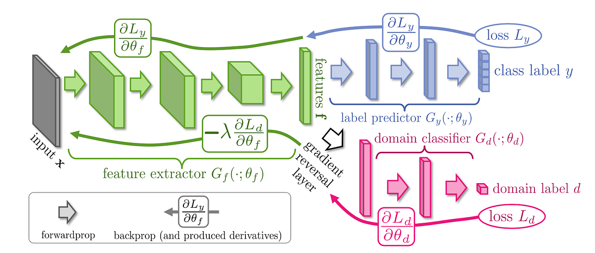

Feature Alignment
Source와 Target의 특징 공간을 최대한 가깝게 맞춰 도메인이 달라도 유사한 표현을 얻도록 합니다.
Label이 없는 Target Domain
UDA는 Target Domain 데이터에 정답 라벨이 전혀 없거나, 실질적으로 사용하기 어려운 상황을 가정합니다.
⇄
◉
Adversarial Learning
도메인 판별기가 source/target를 구분하지 못하도록 학습해, 도메인에 덜 민감한 공통 특징을 추출합니다.
도메인 판별기가 source/target를 구분하지 못하도록 학습해, 도메인에 덜 민감한 공통 특징을 추출합니다.
핵심 목표
라벨은 Source에만 있고 Target에는 없더라도, 실제 서비스 환경에서 잘 작동하는 표현을 학습하는 것입니다.
라벨은 Source에만 있고 Target에는 없더라도, 실제 서비스 환경에서 잘 작동하는 표현을 학습하는 것입니다.
